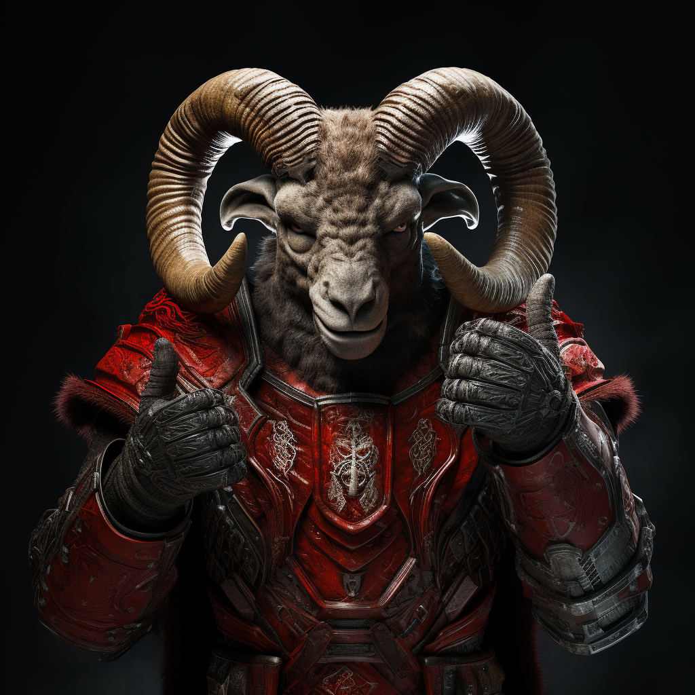

"Je to pěknej flákač!" - pravil o kronikáři Ing. Jan Pokorný (alias Popkorn, občas Pusinka)
Bill Gates kdysi řekl, že náročné úkoly zadává těm nejlínějším lidem, protože naleznou nejjednodušíí způsob, jak to udělat.
Tak jsme to zkusili... Hle, Pane Gates, kronika je pusto prázdná!
Milý čtenáři, je nám radostnou zprávou, že Tě to zajímá a my už na tom "pilně" pracujeme.
